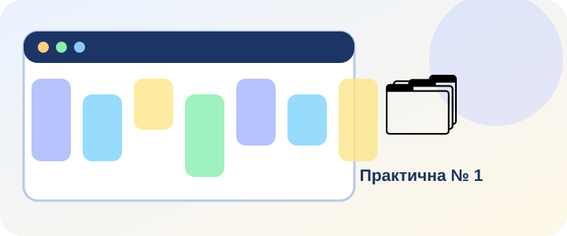

Обов’язково після виконання кожної роботи
🔍 Знайдіть помилку
🧩 Самоперевірка
📝 Підсумок роботи
Звіт містить виконані дії, результати перевірок, поточні дані та Ваш висновок. У вікні друку виберіть «Зберегти як PDF».

Звіт містить виконані дії, результати перевірок, поточні дані та Ваш висновок. У вікні друку виберіть «Зберегти як PDF».